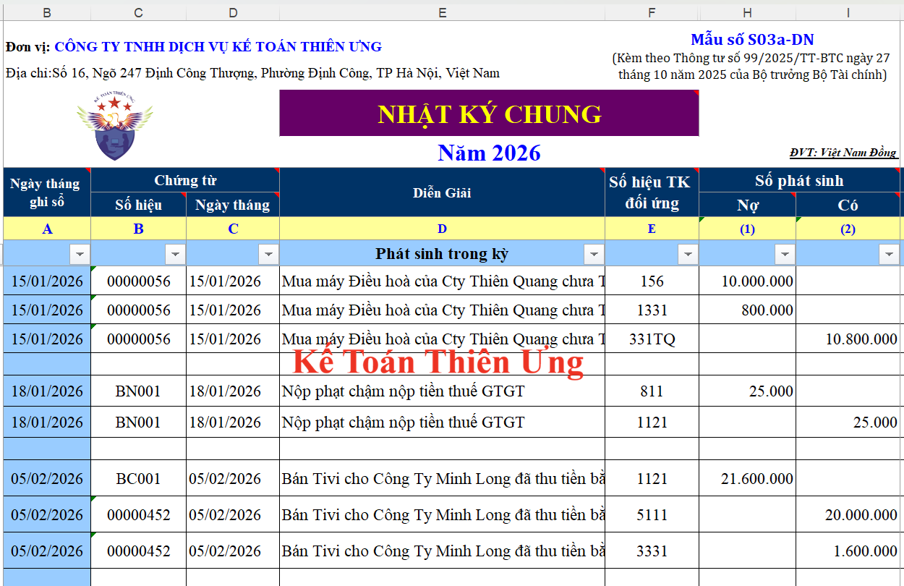

Sổ Nhật ký chung là sổ kế toán tổng hợp dùng để ghi chép các nghiệp vụ kinh tế, tài chính phát sinh theo trình tự thời gian đồng thời phản ánh theo quan hệ đối ứng tài khoản (Định khoản kế toán) để phục vụ việc ghi Sổ Cái. Số liệu ghi trên sổ Nhật ký chung được dùng làm căn cứ để ghi vào Sổ Cái.
1. Mẫu sổ Nhật ký chung theo Thông tư số 99/2025/TT-BTC
SỔ NHẬT KÝ CHUNG
Năm... Đơn vị tính:.........
- Sổ này có .... trang, đánh số từ trang số 01 đến trang ... - Ngày mở sổ:...
|
||||||||||||||||||||||||||||||||||||||||||||||||||||||
Lưu ý: Các mẫu sổ kế toán tại Phụ lục III ban hành kèm theo Thông tư 99/2025/TT-BTC đều là những mẫu tham khảo
2. Cách lập sổ Nhật ký chung theo Mẫu số S03a-DN của Thông tư số 99
Kết cấu sổ Nhật ký chung được quy định thống nhất theo mẫu ban hành trong chế độ này:
- Cột A: Ghi ngày, tháng ghi sổ.
- Cột B, C: Ghi số hiệu và ngày, tháng lập của chứng từ kế toán dùng làm căn cứ ghi sổ.
- Cột D: Ghi tóm tắt nội dung nghiệp vụ kinh tế, tài chính phát sinh của chứng từ kế toán.
- Cột E: Đánh dấu các nghiệp vụ ghi sổ Nhật ký chung đã được ghi vào Sổ Cái.
- Cột G: Ghi số thứ tự dòng của Nhật ký chung
- Cột H: Ghi số hiệu các tài khoản ghi Nợ, ghi Có theo định khoản kế toán các nghiệp vụ phát sinh. Tài khoản ghi Nợ được ghi trước, Tài khoản ghi Có được ghi sau, mỗi tài khoản được ghi một dòng riêng.
- Cột 1: Ghi số tiền phát sinh các Tài khoản ghi Nợ.
- Cột 2: Ghi số tiền phát sinh các Tài khoản ghi Có.
Cuối trang sổ, cộng số phát sinh lũy kế để chuyển sang trang sau. Đầu trang sổ, ghi số cộng trang trước chuyển sang.
Về nguyên tắc tất cả các nghiệp vụ kinh tế, tài chính phát sinh đều phải ghi vào sổ Nhật ký chung. Tuy nhiên, trong trường hợp một hoặc một số đối tượng kế toán có số lượng phát sinh lớn, để đơn giản và giảm bớt khối lượng ghi Sổ Cái, doanh nghiệp có thể mở các sổ Nhật ký đặc biệt để ghi riêng các nghiệp vụ phát sinh liên quan đến các đối tượng kế toán đó.
3. Mẫu Sổ Nhật ký chung trên Excel
